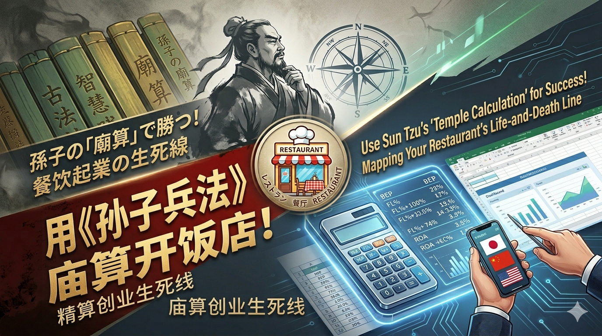

2026年6月
飲食店開業の生死線を「孫子の兵法」で徹底精算する【2026年】

飲食業界には残酷なデータがあります。日本でも中国でも、新しく開業した飲食店の30%が1年以内に閉店し、3年以内の閉店率は70%にも上ります。
多くの人が「熱意」と「料理への愛」だけで開業しますが、孫子の兵法の視点では、それは準備なしで戦場に飛び込むのと同じです。
孫子は『始計篇』でこう言っています。
「夫れ戦わずして廟算に勝つ者は、得る算多ければなり。戦わずして廟算に勝たざる者は、得る算少なければなり。多算は勝ち、少算は勝たず。況や無算においてをや。」
創業はギャンブルではありません。開業前に、帳簿と図表の上で「敵と味方を計算し尽くす」こと。開業前に紙の上で勝てないなら、現実でもあなたは閉店する70%側になるでしょう。
今回は「ホテルの料理長が独立して自分の店を持つ」というケースを例に、孫子の「五事七計」モデルで創業前の精算プロセスを解説します。
ステップ1：「五事」モデルで飲食店の生存次元を分解する
孫子は、戦いの勝敗を評価するために5つの不動の次元（五事）を挙げています：道・天・地・将・法。
1. 道（ビジョンと顧客の共鳴）—— なぜ客があなたを選ぶのか？
兵法原文：「道とは、民をして上と意を同じうすることを得るなり。」
あなたのコア商品は、顧客と強い「共鳴」を生み出せるか？料理長の腕前は確かでも、高級ホテルの複雑な料理をそのまま街角の小さな店に持ち込めば、高価格ゆえに客と「道」が合いません。
実践判断：中毒性が高くリピート率の高い単品（地元の粉もの、特製ソースの肉料理など）を探せ。ホテルの技術を「降りて」大衆の剛需に応えるのが最大の「道」です。
2. 天（タイミングとトレンド）—— 追い風か、向かい風か？
兵法原文：「天とは、陰陽・寒暑・時制なり。」
マクロ環境と業界サイクルを読む。現在の飲食業界は「食材費の高騰」と「人手不足（時給の上昇）」という2つの逆風に直面しています。
実践判断：多くの人手を必要とする従来型の料理店は避け、「省人化・デジタル化」を徹底した軽飲食が正解。「高効率」の流れに乗ることです。
3. 地（立地と物件）—— 家賃が生死を分ける
兵法原文：「地とは、遠近・険易・広狭・死生なり。」
1階路面店は「生地」—— 集客力は高いが家賃や保証金が驚くほど高い。2階や路地裏は「険地」—— 家賃は安いがSNSや口コミでの集客力が必須。
実践判断：料理長に技術があれば「酒の香りは巷の深さにあっても怖くない」。高額な家賃を避け、2階やコミュニティ型の物件を選び、家賃を売上の10%以内に抑える。
4. 将（チームと個人の能力）—— 職人から経営者への変革
兵法原文：「将とは、智・信・仁・勇・厳なり。」
自分の能力を棚卸しせよ。ホテルでは「舌」にだけ責任を持てばよかったが、経営者になった今、「帳簿」に責任を持てるか？毎日12時間の重労働に耐えられるか？
実践判断：創業者は思考の転換を完了せよ——厨房では料理長、帳簿の前ではケチになること。
5. 法（財務モデルと制度）—— 数学の上での不敗の防衛線
兵法原文：「法とは、曲制・官道・主用なり。」
最も精密な数学的計算が必要な部分です。ここでは飲食業界で最も重要なFLコスト法則（Food食材費 + Labor人件費）を導入します。
ステップ2：ハードコア数学精算 —— 飲食店の「法」
孫子は「兵は勝ちを貴ぶ、久しきを貴ばず」と言います。飲食店が生き残れるかどうかは、すべて損益分岐点（BEP）にかかっています。
料理長が15坪（約50平方メートル、25席）の小さな店を開くケースで財務警報表を作成しましょう。
| 費目 | 理想比率 | 月額予算 | 兵法解説 |
|---|---|---|---|
| R（家賃） | 10% | 30万円 | 月商目標300万円を逆算 |
| F（食材費） | 30% | 90万円 | サプライチェーンと標準化でロスをゼロに |
| L（人件費） | 30% | 90万円 | 生死線！料理長1人＋アルバイト1人で最小化 |
| その他（水光熱/税） | 15% | 45万円 | 固定的な支出で削減困難 |
| 純利益（オーナー取り分） | 15% | 45万円 | 事業リスクの現実的なリターン |
戦術逆算：1日に何食売ればいいのか？
月商300万円を達成するため、月26日営業で計算します。
1日の目標売上：300万円 ÷ 26日 = 約11.5万円/日
もし1000円のランチなら：1日115人の来客が必要。25席でランチタイムに4.6回転——これは戦術的に極めて困難（ほぼ死地）。
もし4000円の夜のコース/居酒屋なら：1日29人でOK。1.2回転——戦術的難易度が一気に下がり、勝算が大きく上がる！
ステップ3：最終決断 —— 廟算多き者が勝つ
上記の計算を終えたら、異なる出店アイデアをこの「意思決定ファネル」に通します。
[アイデアプール：大型料亭 vs 高単品専門店]
↓
[FLコスト検証（人件費・家賃が高すぎるものは却下！）]
↓
[調理の標準化検証（料理長不在でも2分で提供可能か？不可なら却下！）]
↓
[最終決断：不敗の地に立つ「勝兵」]
料理長が生き残るための最終戦術：先ず不敗の地に立つ
孫子があなたに贈る最終アドバイスは「大きくやれ」ではなく、以下の3つです。
「居抜き物件」を探せ：
更地から内装工事を始めるな。居抜き物件（前のテナントの内装が残っている物件）を選び、初期投資を極限まで抑え、運転資金として6ヶ月分の固定費を確保せよ。
工程の前倒し、ワンオペ体制：
開業前にホテルの複雑な調味を中央厨房で「標準ソース/スープ」にしてしまう。営業時は1〜2人で店を回せるようにし、人件費を極限まで下げよ。
孫子は言います。「先ず為すこと能わざるを為して、以に敵の勝つべきを待つ。」創業前に固定費と人件費を誰にも潰されないレベルまで下げよ。残りは、市場の追い風を静かに待つだけだ。